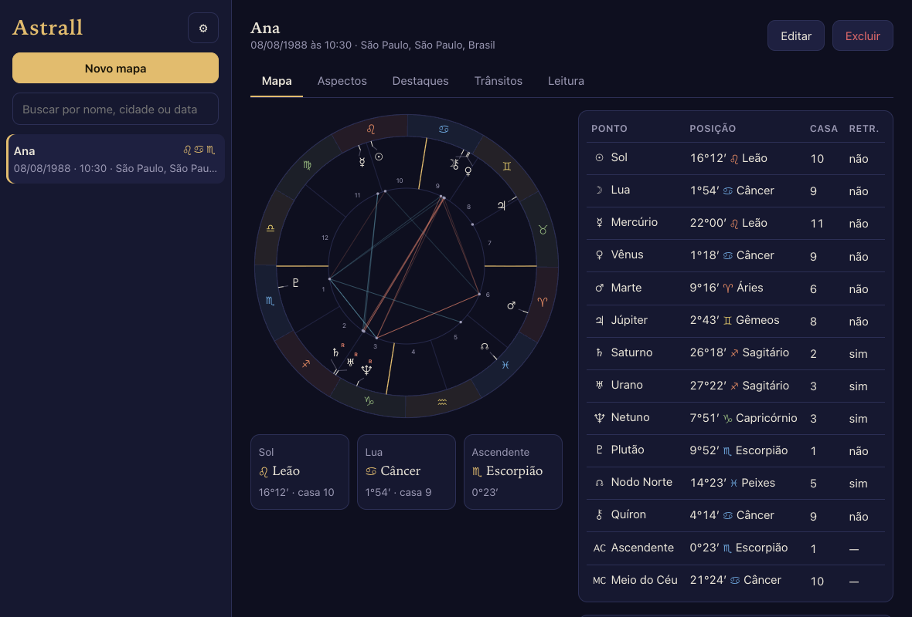
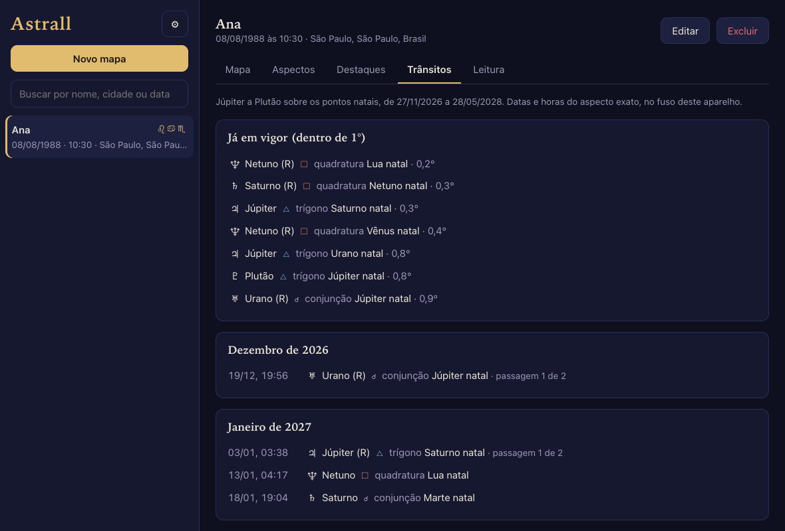
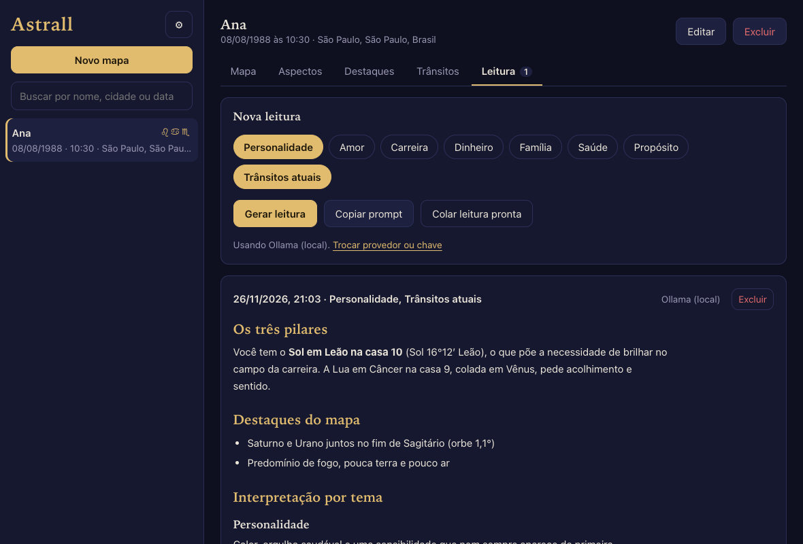

Seu mapa astral, calculado no seu computador
O Astrall calcula o mapa natal com efemérides astronômicas, sem depender de internet, e guarda cada mapa e cada leitura no histórico. Código aberto, para macOS, Windows e Linux.
Gratuito. Os instaladores ficam na página de versões do GitHub.

Da entrevista ao mapa, com conferência no meio
O app pergunta uma coisa de cada vez e, antes de calcular, mostra o que entendeu para você conferir.
- Nome, data, horário, cidade, temas e opções de cálculo.
- Busca de cidade offline, com 172 mil lugares e suas coordenadas.
- Fuso e horário de verão em vigor naquela data, com a hora convertida para UTC.
- Sem horário de nascimento: mapa ao meio-dia, sem casas, com aviso do que fica incerto.
- Roda do mapa, três pilares, tabela de pontos, casas, aspectos e destaques.

A leitura é escrita sobre números já calculados
O modelo de linguagem nunca calcula posições: recebe o mapa pronto e só interpreta. Você escolhe quem escreve.
- Modelo local pelo Ollama, por padrão: a leitura não sai da sua máquina.
- Claude, OpenAI ou qualquer API compatível, com a chave guardada no cofre do sistema.
- Sem provedor nenhum: copie o prompt pronto, use em outro chat e cole a resposta de volta.
- Trânsitos de Júpiter a Plutão nos próximos 18 meses, com a data exata de cada aspecto.

Precisão conferida com o JPL
Sol e planetas pela teoria VSOP87, Lua pela ELP-2000/82, Plutão e Quíron por posições do JPL Horizons. Os testes automáticos comparam cada corpo com o JPL Horizons e com a Swiss Ephemeris, de 1900 a 2024.
Baixar
Os instaladores são gerados a cada versão pelo GitHub Actions e ficam na página de versões.
macOS
Apple Silicon e Intel. O app ainda não é assinado pela Apple: se o macOS bloquear a abertura, vá em Ajustes do Sistema, Privacidade e Segurança, e escolha "Abrir Mesmo Assim".
Windows
Windows 10 e 11. O instalador não é assinado: no aviso do SmartScreen, escolha "Mais informações" e "Executar assim mesmo".
A versão para iOS está em desenvolvimento. Para compilar você mesmo:
npm install && npm run tauri build.